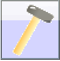
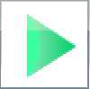

2. Netzwerke¶
In diesem Kapitel wirst du selbst tätig. Mit dem Netzwerksimulator Filius kannst du die Grundlagen von Computer-Netzwerken auf dem eigenen Computer ausprobieren. Den Netzwerksimulator Filius gibt es für Windows, OSX und Linux. Du kannst Filius kostenlos unter https://www.lernsoftware-filius.de herunterladen und installieren.
2.1. Tipps beim Umgang mit Filius kont¶
Achte darauf, ob du die Arbeitsschritte im Entwurfsmodus  oder Aktionsmodus  durchführen musst.
Verkleinere im Aktionsmodus das Hauptfenster so, dass die Desktop-Ansichten der einzelnen Geräte neben das Hauptfenster passen.
Benenne die Rechner nach ihrer Funktion und hänge einen Teil der IP-Adresse an (z.B. Webserver mit der IP-Adresse 192.168.0.3 bekommt den Namen „Webserver_0.3“).
Verwende zur besseren Übersicht für Clients („normale“ Rechner) immer das Notebook.
Verwende für Computer die eine Server-Funktion ausüben immer den Rechner.
Wenn du mehr als zwei Computer verbinden möchtest, benötigst du einen Switch.
Falls du zwei Netzwerke miteinander verbinden möchtest, benötigst du einen Vermittlungsrechner (Router).
Über Modems können Netze rechnerübergreifend verbunden werden.
2.2. Kleine LAN-Party: Verbindung von zwei Rechnern¶
Übung 1¶
Entwurfsmodus¶
Erstelle ein Netzwerk mit zwei vernetzten Clients („normale“ Rechner)
Ändere Die Namen der Notebooks auf Client_1_10 und Client_2_10.
Aktionsmodus¶
Installiere auf Client_1_10 die Befehlszeilenkonsole
Öffne die Befehlszeilenkonsole und trage folgenden Befehl ein:
ping 192.168.0.10.Öffne mit einem Rechtsklick auf den entsprechenden Clienten Datenaustausch anzeigen.
Fragen¶
Was beobachtest du, wenn du dir die Befehlszeilenkonsole und die Datenaustausch-Fenster (Protokolle) beider Clients anschaust?
Wieviele Pakete werden verschickt?
Wieviele Pakete werden empfangen?
Was ist im Datenaustausch-Fenster von Client 1_10 passiert?
Was ist im Datenaustausch-Fenster von Client 2_10 passiert?
Ping erklärt¶
Ping ist ein Diagnose-Programm, mit dem überprüft werden kann, ob ein bestimmtes Gerät in einem IP-Netzwerk erreichbar ist. Daneben es auch die Zeitspanne zwischen dem Aussenden eines Paketes zu diesem Host und dem Empfangen eines daraufhin unmittelbar zurückgeschickten Antwortpaketes an (= Paketumlaufzeit, meist round trip time oder RTT genannt). Das Programm wird üblicherweise als Konsolenbefehl ausgeführt.